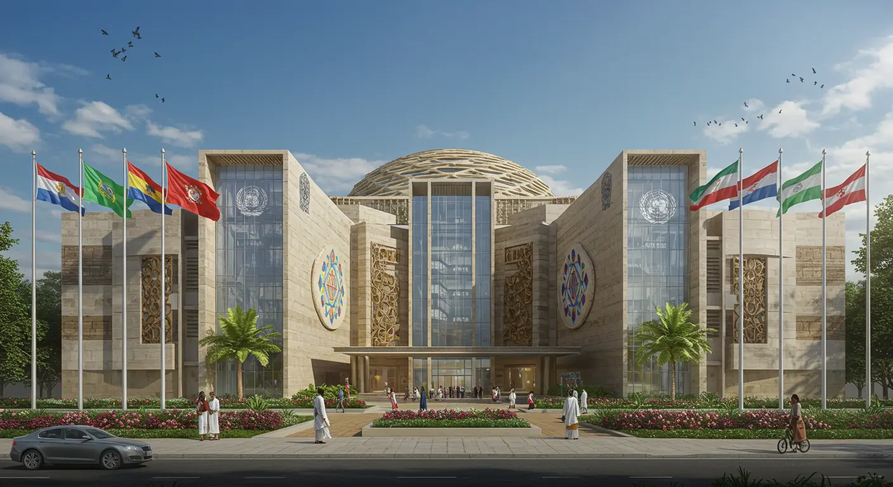

Secretariat
The General Secretariat is the central hub of the United Ancient Nations, carrying out the day-to-day work of the UAN as guided by its founding Charter. The General Secretariat is led by a collective leadership council and comprises stewards and wisdom keepers from around the world. Staff are recruited from our Member Nations and work on cultural preservation missions, diplomatic outreach, and sustainable development projects globally. Serving the cause of peace and the preservation of indigenous sciences, lifestyle, heritage and ancestral wisdom is our sacred duty. Since our founding, our members have dedicated themselves to creating a dignified platform for Indigenous leadership.
The General Secretariat is organized into Councils and Commissions, with each having a distinct area of action and responsibility. These bodies coordinate with each other to ensure cohesion in the UAN's programme of work.
Secretary-General
The Leadership Council is the collective chief administrative body of the United Ancient Nations and head of the General Secretariat.
Councils and Commissions of the General Secretariat
EXECUTIVE OFFICE OF THE LEADERSHIP COUNCIL
COUNCIL ON CULTURAL & DIGITAL HERITAGE PRESERVATION
COUNCIL ON INDIGENOUS DIPLOMACY & GLOBAL PEACE
COUNCIL ON ENVIRONMENTAL PRESERVATION
COUNCIL ON HEALTH, WELLNESS & SUSTAINED ECONOMIC DEVELOPMENT
OFFICE OF CHARTER AFFAIRS
DEPARTMENT OF GLOBAL COMMUNICATIONS & ADVOCACY
DEPARTMENT OF OPERATIONAL SUPPORT
Key Partners and Sponsoring Nations
The United States of KAILASA
As the main sponsor of the proposed UAN Headquarters, the United States of KAILASA serves as the first indigenous nation specifically for Hindus. Under the leadership of THE SPH Bhagavan Nithyananda Paramashiva, KAILASA's mission is focused on the revival of the Ancient enlightened Sanatana Hindu Civilization and is recognized as a sovereign subject of international law with complete juridical statehood.
Global Presence & Regional Councils
The UAN is a manifestation of the profound connection amongst Indigenous peoples across the world. Our presence is maintained through our members in these regions:
- Council for Africa
- Council for the Americas and the Caribbean
- Council for Asia and Oceania
- Council for Europe